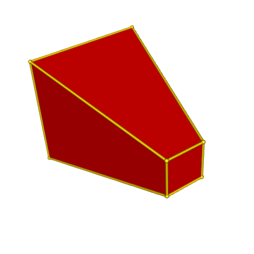
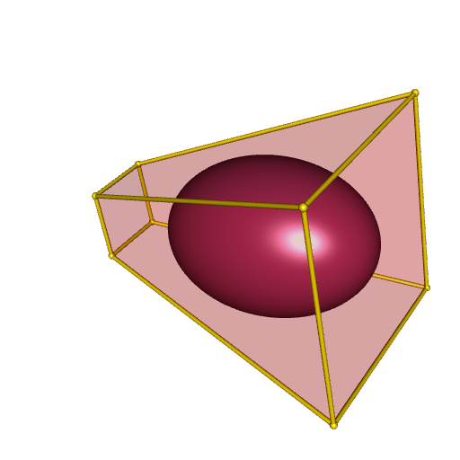
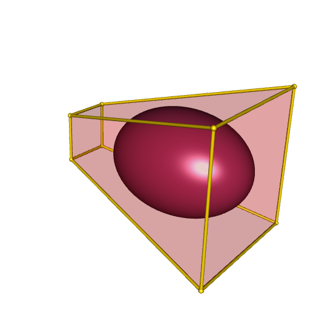

Maximum volume inscribed ellipsoid
I’ve just discovered the excellent book Convex Optimization written by Stephen Boyd and Lieven Vandenberghe.
It gives methods for many interesting geometric problems. In this blog post I will construct the maximum volume ellipsoid inscribed in a convex polyhedron.
Let’s take the vertices of a convex polyhedron:
vertices <- rbind(
c( 0, 0, 0),
c( 0, 1, 0),
c( 1, 1, 0),
c( 1, 0, 0),
c(-1, -1, 4),
c(-1, 2, 4),
c( 2, 2, 4),
c( 2, -1, 4)
)Let’s see how it looks like:
library(cxhull)
library(rgl)
polyhedron <- cxhull(vertices, triangulate = TRUE)
open3d(windowRect = 50 + c(0, 0, 512, 512))
plotConvexHull3d(polyhedron, facesColor = "red")
The goal is to inscribe an ellipsoid in this polyhedron with the maximum volume.
We first need to represent the polyhedron by a set of linear inequalities. To do so, we use the rcdd package.
library(rcdd)
V <- makeV(vertices) # V-representation
H <- scdd(V)[["output"]] # H-representation
A <- - H[, -c(1L, 2L)] # matrix A
b <- H[, 2L] # column vector bNow we have a matrix \(A\) and a column vector \(b\) such that our polyhedron is defined by \(Ax \leqslant b\).
Then we’re ready to define the optimization problem, with the CVXR package. See the book for the details
library(CVXR)
Bvar <- Variable(3, 3, symmetric = TRUE) # a symmetric 3x3 matrix
dvar <- Variable(3) # a length three vector
objective <- Minimize(-log_det(Bvar)) # objective
# now we define the constraints
constraints <- list()
for(i in 1L:nrow(A)) {
constraints <- append(
constraints, list(norm2(Bvar %*% A[i,]) + sum(A[i,]*dvar) <= b[i])
)
}It remains to solve this problem.
program <- Problem(objective, constraints)
solution <- solve(program, solver = "SCS")
# extract the solutions
B <- solution$getValue(Bvar)
d <- c(solution$getValue(dvar))The matrix \(B\) is the shape matrix of the ellipsoid and the vector \(d\) is its center. That means that the ellipsoid is the set of vector \(Bu + d\) for \(u\) in the unit ball. This is a parameterization of the ellipsoid. We can plot it with the help of spherical coordinates.
library(misc3d) # to use parametric3d
h <- function(θ, ϕ) {
x <- cos(θ) * sin(ϕ)
y <- sin(θ) * sin(ϕ)
z <- cos(ϕ)
u <- c(x, y, z)
B %*% u + d
}
fx <- Vectorize(function(u, v) {h(u, v)[1L]})
fy <- Vectorize(function(u, v) {h(u, v)[2L]})
fz <- Vectorize(function(u, v) {h(u, v)[3L]})
# plot
open3d(windowRect = 50 + c(0, 0, 512, 512))
plotConvexHull3d(polyhedron, facesColor = "red", alpha = 0.2)
parametric3d(
fx, fy, fz, umin = 0, umax = 2*pi, vmin = 0, vmax = pi, n = 250,
color = "maroon", add = TRUE
)
Another way to plot it is to use the central matrix of the ellipsoid, which defines the ellipsoid as an isosurface. The central matrix is \(S = {(BB')^{-1}}\), and then the ellipsoid is the set of points \(x\) satisfying \((x-d)' S (x-d) \leqslant 1\).
library(misc3d)
S <- chol2inv(chol(tcrossprod(B)))
x <- seq(-1, 2, length.out = 150L)
y <- seq(-1, 2, length.out = 150L)
z <- seq(1, 4, length.out = 150L)
Grid <- as.matrix(expand.grid(x = x, y = y, z = z))
voxel <- array(
apply(Grid, 1L, function(v) c(t(v-d) %*% S %*% (v-d))),
dim = c(150L, 150L, 150L)
)
isosurface <- computeContour3d(voxel, max(voxel), 1, x = x, y = y, z = z)
# plot
open3d(windowRect = 50 + c(0, 0, 512, 512))
drawScene.rgl(makeTriangles(isosurface), color = "maroon")
plotConvexHull3d(polyhedron, facesColor = "red", alpha = 0.2)
The same method can be performed in any dimension. In the latest update of my package PlaneGeometry, I implemented it for dimension 2.